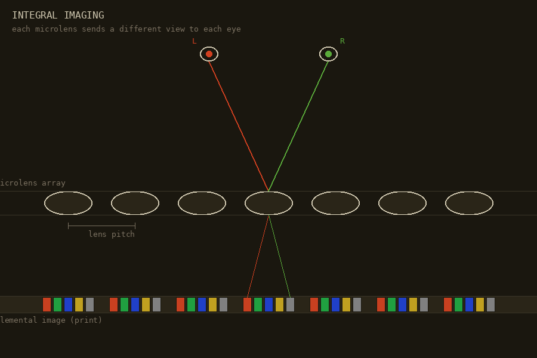

cat projects/dont_do/integral-imaging.md
INTEGRAL IMAGING
project / dont_do / 3d-print / light-field / 1908

Make a static printed 3D image using a microlens array — a true integral
photograph, not a lenticular flip. Full parallax: move your head in any
direction and see around the objects. No glasses needed. Gabriel
Lippmann proposed this in 1908. Still basically impossible to do well at
home.
The resolution trade-off is brutal. Every microlens = one 3D pixel. A
100×100 lens array on a 4K screen gives you a 100×100 image. Alignment
tolerance is <15 µm — a human hair is 75 µm. Thermal expansion alone
can ruin a print. DIY path exists but the margin for error is
microscopic, literally.
how it works
A sheet of tiny lenses sits over a high-resolution print. Each microlens
covers a small cluster of pixels — the elemental image
— each pixel encoding a slightly different viewing angle. The lenses
redirect those rays so that your left and right eye (and any lateral
movement) receive the correct perspective. Result: a reconstructed 3D
image floating in or behind the lens plane.
Unlike stereoscopic 3D (two views only), integral imaging gives
full 2D parallax — up/down and left/right — and avoids
the vergence-accommodation conflict that causes eye strain in regular 3D
cinema.
the numbers
| parameter |
diy / amateur |
professional |
| lens pitch |
1.0 mm (25 LPI) |
0.25 mm (100 LPI) |
| print resolution |
600 DPI |
2400 – 4800 DPI |
| alignment tolerance |
~100 µm (visible ghosting) |
<15 µm (clean 3D) |
| views per lens |
5 – 10 |
20 – 60 |
The math: 50 lenses/inch × 20 viewing angles =
1000 px/inch
minimum. For smooth parallax motion, 2400 DPI is the professional entry
point. Standard inkjet printers top out around 1200 DPI, optimistic.
A pitch error of 0.008 mm (lens nominal 0.508 mm, print generated for
0.500 mm) compounds: after 60 lenses, the image is half a lens-width out
of sync. The whole thing goes wrong fast.
why it fails for static prints
-
Moiré: printed dot pitch vs. lens pitch must match
exactly or you get wavy interference patterns across the whole image.
-
Thermal/humidity drift: plastic lens sheet and paper
expand at different rates. A few degrees shifts pixels out from under
their lenses.
-
Registration: gluing a lens sheet onto a print and
centering every lens over every elemental image across the whole
surface is a precision manufacturing problem. Pros print directly onto
the back of the lens sheet with a UV flatbed — skips lamination
entirely.
lenticular vs. integral
Most "3D" prints in shops are lenticular: cylindrical
lens ridges, parallax only left-right, easy to align. Integral imaging
uses a fly's-eye array — thousands of tiny round bubbles —
giving true 2D parallax. Aligning to a bubble grid is an order of
magnitude harder than aligning to vertical lines.
artists doing it anyway
-
Jeff Robb — custom 3D capture rig, dozens of angles,
large-format high-DPI sheets. Calls it "sculpture in a frame."
-
Patrick Boyd — active since 80s/90s, lenticular
photography as spatial medium. [instagram]
-
Yaacov Agam — kinetic art, physical corrugated
surfaces as microlens precursor, Agamographs. [youtube]
-
r/lenticular_art — makers using Python + Blender to
generate elemental image grids for microlens arrays. [reddit]
-
Looking Glass Factory — digital light field displays,
active community, useful for previewing 3D scenes before a print.
if you were to try
-
Get a fly's-eye lens sheet with known pitch (e.g. 0.5 mm). Measure it.
Don't trust the spec.
-
Generate elemental image grids in Blender (scripts exist) or use
Looking Glass tools to preview the scene first.
-
Print at 2400 DPI minimum on a UV flatbed that prints directly onto
the lens sheet backing — skip lamination entirely.
- Control temperature during printing and mounting. Seriously.
- Test at postcard scale before committing to large format.
Pro shortcut: print directly onto the back of the lens sheet using a UV
flatbed. Most home setups can't do this. Without it, every lamination
attempt is a new opportunity to be 50 µm off.